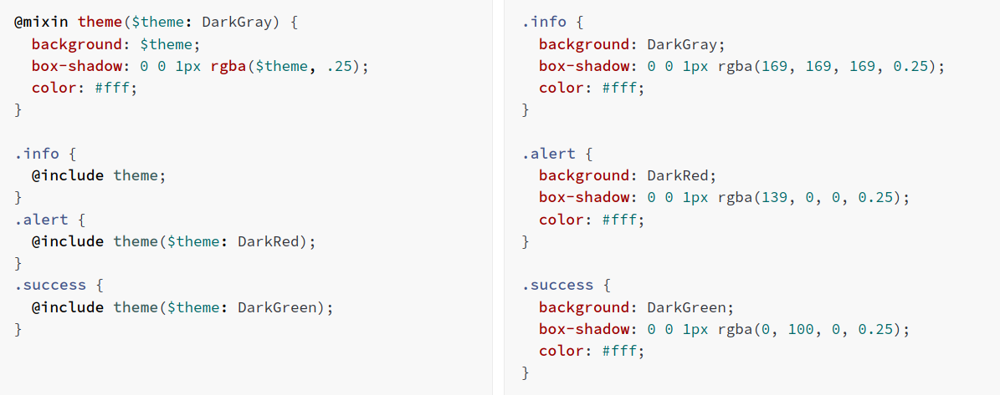

CSS on its own can be fun, but stylesheets are getting larger, more complex, and harder to maintain. This is where a preprocessor can help. Sass has features that don't exist in CSS yet like nesting, mixins, inheritance, and other nifty goodies that help you write robust, maintainable CSS.
Once you start tinkering with Sass, it will take your preprocessed Sass file and save it as a normal CSS file that you can use in your website.
The most direct way to make this happen is in your terminal. Once Sass is installed, you can compile your Sass to CSS using the sass command. You'll need to tell Sass which file to build from, and where to output CSS to. For example, running sass input.scss output.css from your terminal would take a single Sass file, input.scss, and compile that file to output.css.
You can also watch individual files or directories with the --watch flag. The watch flag tells Sass to watch your source files for changes, and re-compile CSS each time you save your Sass. If you wanted to watch (instead of manually build) your input.scss file, you'd just add the watch flag to your command, like so
sass --watch input.scss output.css
You can watch and output to directories by using folder paths as your input and output, and separating them with a colon. In this example
sass --watch app/sass:public/stylesheets
Sass would watch all files in the app/sass folder for changes, and compile CSS to the public/stylesheets folder.
Think of variables as a way to store information that you want to reuse throughout your stylesheet. You can store things like colors, font stacks, or any CSS value you think you'll want to reuse. Sass uses the $ symbol to make something a variable. Here's an example:
$font-stack :Helvetica, sans-serif;
$primary-color: #333;
body {
font:
100% $font-stack;
color:
$primary-color
}
When the Sass is processed, it takes the variables we define for the $font-stack and $primary-color and outputs normal CSS with our variable values placed in the CSS. This can be extremely powerful when working with brand colors and keeping them consistent throughout the site.
When writing HTML you've probably noticed that it has a clear nested and visual hierarchy. CSS, on the other hand, doesn't. Sass will let you nest your CSS selectors in a way that follows the same visual hierarchy of your HTML. Be aware that overly nested rules will result in over-qualified CSS that could prove hard to maintain and is generally considered bad practice. With that in mind, here's an example of some typical styles for a site's navigation:
You'll notice that the ul, li, and a selectors are nested inside the nav selector. This is a great way to organize your CSS and make it more readable.
You can create partial Sass files that contain little snippets of CSS that you can include in other Sass files. This is a great way to modularize your CSS and help keep things easier to maintain. A partial is a Sass file named with a leading underscore. You might name it something like _partial.scss. The underscore lets Sass know that the file is only a partial file and that it should not be generated into a CSS file. Sass partials are used with the @use rule.
@use
You don't have to write all your Sass in a single file. You can split it up however you want with the @use rule. This rule loads another Sass file as a module, which means you can refer to its variables, mixins, and functions in your Sass file with a namespace based on the filename. Using a file will also include the CSS it generates in your compiled output!
Some things in CSS are a bit tedious to write, especially with CSS3 and the many vendor prefixes that exist. A mixin lets you make groups of CSS declarations that you want to reuse throughout your site. You can even pass in values to make your mixin more flexible. A good use of a mixin is for vendor prefixes. Here's an example for transform.

To create a mixin you use the @mixin directive and give it a name. We've named our mixin transform. We're also using the variable $property inside the parentheses so we can pass in a transform of whatever we want. After you create your mixin, you can then use it as a CSS declaration starting with @include followed by the name of the mixin.
Some things in CSS are a bit tedious to write, especially with CSS3 and the many vendor prefixes that exist. A mixin lets you make groups of CSS declarations that you want to reuse throughout your site. You can even pass in values to make your mixin more flexible. A good use of a mixin is for vendor prefixes. Here's an example for transform.
What the above code does is tells .message, .success, .error, and .warning to behave just like %message-shared. That means anywhere that %message-shared shows up, .message, .success, .error, & .warning will too. The magic happens in the generated CSS, where each of these classes will get the same CSS properties as %message-shared. This helps you avoid having to write multiple class names on HTML elements. You can extend most simple CSS selectors in addition to placeholder classes in Sass, but using placeholders is the easiest way to make sure you aren't extending a class that's nested elsewhere in your styles, which can result in unintended selectors in your CSS. Note that the CSS in %equal-heights isn't generated, because %equal-heights is never extended.